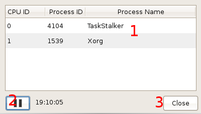

Opened from the "View" menu (hotkey Ctrl+R), this dialog displays a time line of processes being scheduled for execution across the system's processors. These details are read from the scheduler's debug file, /proc/sched_debug.
Displayed here is the process (by ID) executing on each CPU core, at as close as possible to the time shown. By default, this information is updated each second, but this can be configured through the settings menu.
Pause or resume the updating of the display area.
Close this dialog and return to the main window.